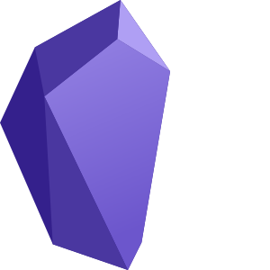

Obsidian
I have been using a basic editor to keep all my notes, and the result is definitely sub-optimal.
Evernote had worked quite fine in the past, and I do not recall well why I stopped using it: probably the lack of a linux client, or the web interface letting me down too many times.
I have started now using Obsidian and it looks pretty nice: it stores the notes in markdown, so it is basically plain text. It is less visually appealing than Evernote, but the linking and navigation between notes is clearly an advantage.
Installation
For an Ubuntu setup, the obsidian webpage (https://obsidian.md/) includes the latest obsidian version as an AppImage.
I download it as ~/development/external/Obsidian-0.13.19.AppImage folder, and link it without version information as:
ln -sf Obsidian-0.13.19.AppImage Obsidian.AppImage
Then start directly the app from this folder:
./Obsidian.AppImage
From a separate terminal, using mount command, you can see that the application is mounted as:
/home/coderazzi/development/external/Obsidian-0.13.19.AppImage on /tmp/.mount_Obsidi5r6aN1 type fuse.Obsidian-0.13.19.AppImage (ro,nosuid,nodev,relatime,user_id=1000,group_id=1000)
Go to the mounted folder:
cd /tmp/.mount_Obsidi5r6aN1
And copy several files:
cp obsidian.png ~/.local/share/icons cp obsidian.desktop ~/.local/share/applications/
Finally, edit this last file:
vi ~/.local/share/applications/obsidian.desktop
So that the two following fields look like:
Exec=/home/coderazzi/development/external/Obsidian.AppImage Icon=/home/coderazzi/.local/share/icons/obsidian.png
Done, exit the application, and it can now be launched using the Ubuntu launcher
Sharing obsidian among my own devices
To share among my computers, I use Dropbox / OneDrive, but I wanted to have it as well under git, to have some version control.
Having a local git repository under Dropbox seems a recipe for disaster, in case Dropbox does some wrong choice on colliding files under the .git folder.
Fortunately, dropbox supports ignoring folders: https://help.dropbox.com/files-folders/restore-delete/ignored-files
In linux,
attr -s com.dropbox.ignored -V 1 /home/coderazzi/Dropbox/Obsidian/.git
(in Ubuntu, this requires installing first attr: sudo apt-get install attr)
Now, all the devices sharing that folder can modify the files, using Dropbox synchronization.
And although any of the devices could clone the git repository into the Dropbox folder, only one should control it.
In my case, my main computer does the git control: if any of the other devices needs access to other versions, etc,
they can clone the repository outside the Dropbox folder, and perform any changes.
My settings
- Editor
- Show frontmatter : no
- Fold heading: yes
- Spellcheck: no
- Auto pair brackets: no
- Auto pair Makrdown syntax: no
- Files and links
- Deleted files: Move to Obsidian trash
- Use [[Wikilinks]] : no
- Detect all file extensions: yes
- Appearance
- Base theme: Dark
- Themes: Blue Opaz
- Core plugins
- Add tag pane
- Community plugins
- Advanced tables
- Editor syntax highlight
- Sliding panes
- Admonition
- Excalidraw
- Mindmap